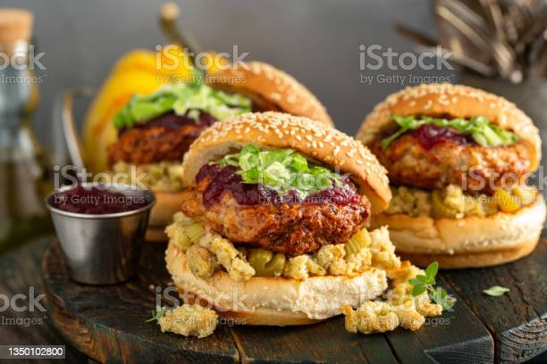

Marinate the chicken. Add all the spices and sauces to the boneless fillets and leave to marinate
for a
couple of hours or overnight. You can use either boneless thighs or breasts. Thigh meat is juicier and more
flavourful.
Prepare dry mix. Combine the dry ingredients together for dredging the chicken.
Make a batter. For dipping the chicken make a thick batter with flour, milk and seasonings.
Coat the chicken. Dip the chicken fillets in the batter and then dredge in flour. Use a wide shallow
bowl for your flour mix and while dredging the chicken with flour press hard to create flakiness.
Deep fry. Drop these fillets in your pot of heated oil with flame on medium. Fry for total 15 mins or
until cooked through.
Assemble burger. Toast your hamburger buns. I use Broiche. Add the chicken fillet, slice of cheese,
fresh tomatoes, homemade burger sauce and lettuce.

Tips For An Ultra Crispy Chicken Fillet
Flatten the chicken fillet with a steak hammer so it is even on all sides and fries evenly.
When dredging in flour, press firmly to get a crispy, flaky coating similar to the KFC Zinger Burger.
You can coat the chicken fillet once but I recommend double-coating for maximum crispiness.
Make sure the oil is not too hot but still heated otherwise the flour coating will fall off the
chicken. Don't touch the chicken for the first 5 minutes and fry on medium heat.
Use a strainer to drain excess oil instead of kitchen paper towel. Paper towel can make the chicken
soggy.